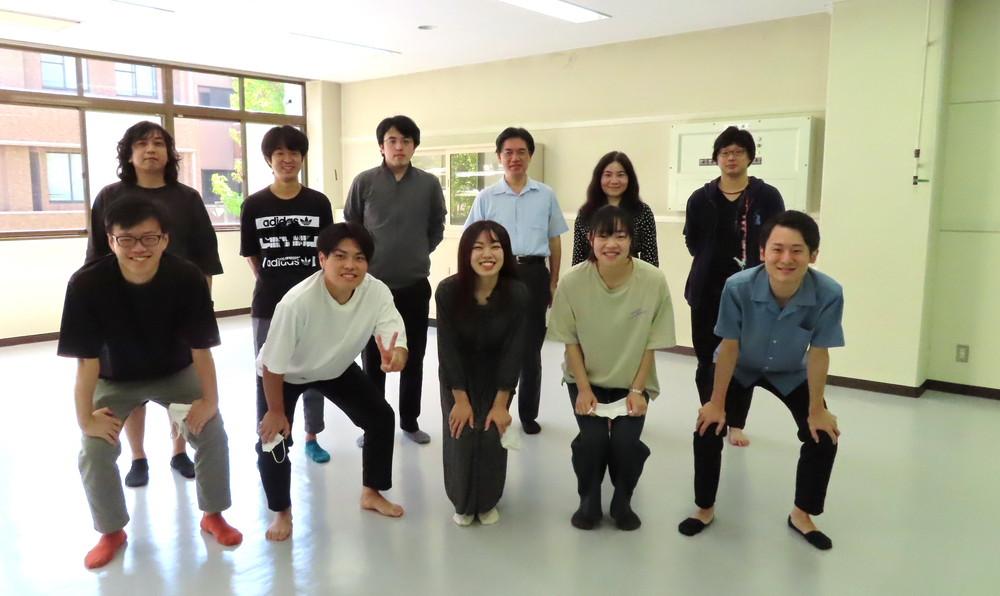

広島大学大学院理学研究科光物性研究室（木村研究室）へようこそ。
光物性研究室では、放射光やレーザーを用いた最先端の固体物性研究を行っています。
トポロジカル物質、磁性体、超伝導体など様々な量子物質が示す「スピン機能物性」、「電子相関効果」や「超高速光スピン相関」を対象とした研究を展開しています。
光物性研究室 : 連絡先
光物性研究室での研究を考えている方へ
光物性研究室 : 連絡先
光物性研究室での研究を考えている方へ
| 2021 年 11 月 16 日 |
|---|
| 実験室立ち上げ |
| 2021 年 9 月 1 日 |
| 黒田健太が准教授として着任しました！ |
| 2021 年 4 月 1 日 |
| 新四年生三名が当研究の新しいメンバーとして配属されました！ |
| 2021 年 2 月 17 日 |
| 博士論文公聴会が行われました。 |
| 2021 年 2 月 15 日 - 16 日 |
| 修士論文発表会が行われました。 |
| 2021 年 2 月 12 日 |
| 卒業論文発表会が行われました。 |
| 2021 年 1 月 12 日 |
|
当研究室D3の宮下剛夫らを中心とした「酸素量制御したモット絶縁体Ca2RuO4+δの低エネルギー電子状態の出現」についての研究成果がSolid State Communicationsに掲載されました。
T. Miyasyita et al., Solid State Commun. 326, 114180 (2021). |
| 2021 年 1 月 9 日 - 10 日 |
| 第34回日本放射光学会年会・放射光科学合同シンポジウムに吉川智己(D3)、河野嵩(M2)が参加し、最新の研究成果を発表しました。 |
| 2020 年 12 月 22 日 |
| 本研究室M2の河野嵩が令和2年度広島大学エクセレント・スチューデント・スカラシップ対象学生に選ばれ表彰されました。[受賞時の写真] |
| 2020 年 11 月 20 日 |
|
当研究室M2の河野嵩らを中心とした「Co2MnGeホイスラー合金のハーフメタルバンド構造と複数のWeyl交差点の観測」についての研究成果がPhysical Review Lettersに掲載されました。
T. Kono et al., Phys. Rev. Lett. 125, 216403 (2020). 広島大学プレスリリース |
| 2020 年 9 月 8 日 - 11 日 |
| 日本物理学会秋季大会に宮下剛夫(D3)、吉川智己(D3)、石坂仁志(D2)、小澤秀介(M2)、尾田拓之慎(M2)、河野嵩(M2)、白石海人(M1)、杉山貴哉(M1)が参加し、最新の研究成果を発表しました。 |
| 2020 年 8 月 26 日 |
| 当研究室D2の吉川智己らを中心とした「ホイスラー合金Co2MnGe(Ga)薄膜のGe(Ga) L2,3端における磁気円二色性スペクトル」についての研究成果がPhysical Review Bに掲載されました。
T. Yoshikawa et al., Phys. Rev. B 102, 064428 (2020). |
| 2020 年 7 月 6 日 |
|
当研究室のヌルママト・ムニサ助教を中心に「相変化材料GeSb2Te4化合物中に、ディラック電子を初めて発見」をしました。本研究は広島大学を中心として
東京大学、スペイン・ロシア・アゼルバイジャンとの国際共同研究による成果でACS Nanoに掲載されました。
Munisa Nurmamat et al., ACS Nano 14, 9059 (2020). 広島大学プレスリリース |
| 2020 年 4 月 1 日 |
| 新四年生三名が当研究の新しいメンバーとして配属されました！ |
| 2020 年 3 月 23 日 |
| 河野嵩(M1)が理学研究科長表彰を受けました。[写真] |
| 2020 年 3 月 23 日 |
| 卒業式が行われました。 |
| 2020 年 3 月 16 日 - 19 日 |
| 日本物理学会年次大会に石坂仁志(D1)、尾田拓之慎(M1)、河野嵩(M1)が参加し、最新の研究成果を発表する予定でした。 お体にお気をつけてお過ごしください。 |
| 2020 年 2 月 18 日 |
| 博士論文公聴会が行われました。 |
| 2020 年 2 月 17 日 |
| 卒業論文発表会が行われました。 |
| 2020 年 2 月 13 日 - 14 日 |
| 修士論文発表会が行われました。 |
| 2019 年 11 月 28 日 |
| 当研究室D3のWang Xiaoxiaoらを中心とした研究成果"Disentangling orbital and spin textures of surface-derived states in non-symmorphic semimetal HfSiS"がPhysical Review Bに掲載されました。
X. Wang et al., Phys. Rev. B 100, 205140 (2019). |
| 2019 年 11 月 7 日 - 10 日 |
| 釜山大学で開催されたThe 2019 Korea - Japan Students Workshopに小澤秀一(M1)、河野嵩(M1)が参加しました。また、河野嵩がBest Presentation Awardを受賞しました。 |
| 2019 年 11 月 1 日 |
| 当研究室D2の吉川智己らを中心とした「トポロジカル絶縁体における二方向光起電力効果」についての研究成果がPhysical Review Bに掲載されました。
T. Yoshikawa et al., Phys. Rev. B 100, 165311 (2019). |
| 2019 年 10 月 14 日 |
| 当研究室M1の河野嵩らを中心とした「共鳴光電子分光によるCo2MnGeの部分状態密度の観測」についての研究成果がPhysical Review Bに掲載されました。
T. Kono et al., Phys. Rev. B 100, 165120 (2019). |
| 2019 年 10 月 6 日 - 11 日 |
| 広島市内で開催されたThe 19th International Conference on Solid Films and SurfacesにXiaoxiao Wang(D3)、吉川智己(D2)、河野嵩(M1)が参加し、最新の研究成果を発表しました。また、この学会で河野嵩(M1)がBest Student Poster Awardを受賞しました！ |
| 2019 年 9 月 18 日 - 21 日 |
| 応用物地学会秋季学術講演会に木村昭夫教授、吉川智己(D2)、河野嵩(M1)が参加し、最新の研究成果を発表しました。 |
| 2019 年 9 月 10 日 - 13 日 |
| 日本物理学会秋季大会に木村昭夫教授、Munisa Nurmamat助教、Xiaoxiao Wang(D3)、吉川智己(D2)、小澤秀介(M1)、尾田拓之慎(M1)、河野嵩(M1)が参加し、最新の研究成果を発表しました。 |
| 2019 年 9 月 3 日 - 4 日 |
| 広島大学で開催された放射光科学若手国際ワークショップにXiaoxiao Wang(D3)、吉川智己(D2)、石坂仁志(D1)、小澤秀介(M1)、尾田拓之慎が参加し、最新の研究成果を発表しました。 |
| 2019 年 9 月 5 日 - 6 日 |
| 広島大学で開催された最先端光電子分光で拓く量子物質科学研究に関するワークショップにXiaoxiao Wang(D3)、吉川智己(D2)、石坂仁志(D1)、小澤秀介(M1)、尾田拓之慎が参加し、最新の研究成果を発表しました。 |
| 2019 年 9 月 3 日 - 4 日 |
| 広島大学で開催された放射光科学若手国際ワークショップにXiaoxiao Wang(D3)、吉川智己(D2)、石坂仁志(D1)、小澤秀介(M1)、尾田拓之慎が参加し、最新の研究成果を発表しました。 |
| 2019 年 8 月 27 日 - 28 日 |
| ゼミ旅行で山口県に行きました。 |
| 2019 年 7 月 15 日 - 19 日 |
| 広島市内で開催されたNTTI 2019 and BEC 2019にXiaoxiao Wang(D3)、吉川智己(D2)が参加し、最新の研究成果を発表しました。 |
| 2019 年 4 月 1 日 |
| 放射光物性・物理研究室の皆さんと合同でお花見・親睦会を行いました。 |
| 2019 年 3 月 23 日 |
| 卒業式が行われました。 |
| 2019 年 3 月 18 日 - 20 日 |
| The Second International Workshop Emergent Condensed-Matter Physics ECMP2019に吉川智己(D1)、宮下剛夫(D1)、小澤秀介(B4)、尾田拓之慎(B4)が参加し発表を行いました。また、この学会で吉川智己(D1)、宮下剛夫(D1)がStudent Poster Awardを受賞しました！ |
| 2019 年 3 月 14 日 - 17 日 |
| 日本物理学会に岩澤英明特任准教授、石坂仁志(M2)、松田旭央(M2)、小澤秀介(B4)が参加し、最新の研究成果を発表しました。 |
| 2019 年 3 月 7 日 - 8 日 |
| The 23rd Hiroshima International Symposium on Synchrotron Radiationに角田一樹(D3)、市川典万(M2)、小澤秀介(B4)、尾田拓之慎(B4)が参加し発表を行いました。また、この学会で小澤秀介(B4)がBest Student Poster Awardを受賞しました！ |
| 2019 年 3 月 4 日 - 8 日 |
| APS March Meeting 2019に岩澤英明特任准教授、吉川智己(D1)、宮下剛夫(D1)が参加し発表を行いました。 |
| 2019 年 2 月 15 日 |
| 博士論文公聴会が行われました。 |
| 2019 年 2 月 14 日 |
| 修士論文発表会が行われました。 |
| 2019 年 2 月 12 日 |
| 卒業論文発表会が行われました。 |
| 2019 年 2 月 1 日 |
| 当研究室の角田一樹(D3)らを中心とした、p型トポロジカル絶縁体の反転分布現象に関する研究成果がPhysical Review Bに掲載されました。本研究は広島大学を中心として東京大学物性研究所、ロシア・ノヴォシビルスク大学との国際共同研究による成果です。
K. Sumida et al., Phys. Rev. B 99, 085302 (2019). |
| 2018 年 11 月 16 日 - 18 日 |
| 広島大学（東広島キャンパス）で開催された2018 Japan-Korea Student Workshopに吉川智己(D1)、宮下剛夫(D1)が参加し、最新の研究成果を発表しました。また岩澤英明（特任准教授）が招待講演を行いました。さらに、この学会で宮下剛夫(D1)がExcellent Presentation Awardを受賞しました！ |
| 2018 年 11 月 1 日 |
| 本研究室の真木祥千子助教がご栄転されました。 |
| 2018 年 10 月 4 日 - 6 日 |
| 広島大学（東広島キャンパス）で開催されたInternational Workshop on Trends in Advanced Spectroscopy in Materials Science (TASPEC)に岩澤英明(特任准教授)、Nurmamat Munisa(研究員)、吉川智己(D1)、宮下剛夫(D1)、市川典万(M2)が参加し、最新の研究成果を発表しました。 |
| 2018 年 10 月 2 日 |
| 当研究室D3の角田一樹らを中心に「プロテクトされた表面と大きなバルクバンドギャップを併せもつトポロジカル絶縁体の発見」をしました。本研究は広島大学を中心としてイタリア、ドイツ、ロシア、スペインとの国際共同研究による成果でPhysical Review Materialsに掲載されました。 K. Sumida |
| 2018 年 9 月 27 日 |
| マールブルグ大学、レーゲンスブルグ大学（ドイツ）およびノヴォシビルスク大学（ロシア）との「トポロジカル表面ディラック電流の光制御」に関する国際共同研究の成果がNatureに掲載されました！ |
| 2018 年 9 月 22 日 - 23 日 |
| 日本学術振興会による事業「ひらめき☆ときめきサイエンス」が開催されました。 |
| 2018 年 9 月 16 日 - 17 日 |
| ゼミ旅行に行きました。 |
| 2018 年 9 月 9 日 - 12 日 |
| 同志社大学（京田辺キャンパス）で開催された日本物理学会2018年秋季大会に吉川智己(D1)、宮下剛夫(D1)が参加し、最新の研究成果を発表しました。また木村昭夫（教授）がシンポジウム講演を行いました。 |
| 2018 年 9 月 6 日 |
| 当研究室のNurmamat Munisa研究員を中心としたトポロジカル絶縁体の論文の図が、2019年春のアメリカ物理学会講演会APS March Meeting 2019（2019年3月4-8日にボストンで開催）のロゴに採用されました！ 〔APS March Meeting 2019 ] |
| 2018 年 6 月 29 日 |
| 当研究室のNurmamat Munisa研究員を中心とした研究成果「黒リンにおける電子のたたき上げ現象を世界で初めて観測 〜次世代の超高速通信デバイスの素材として期待〜」について広島大学からプレス発表されました。〔広島大学の広報〕 |
| 2018 年 6 月 6 日 |
| 当研究室D1の吉川智己による「光エージングによるトポロジカル絶縁体表面での光起電力の増大」についての研究論文がApplied Physics Lettersに掲載されました。 T. Yoshikawa |
| 2018 年 6 月 1 日 |
| 岩澤英明先生が当研究室の特任准教授として着任されました。 |
| 2018 年 5 月 18 日 |
| マールブルク大学のUlrich Hoefer先生が光物性研究室を訪問され、セミナーを行って頂きました。 |
| 2018 年 4 月 23 日 |
| 本研究室の井野明洋特任准教授がご栄転されました。 |
| 2018 年 4 月 4 日 |
| 光物性研究室と放射光物性・物理研究室合同でお花見・親睦会を行いました。 |
| 2018 年 3 月 23 日 |
| 卒業式が行われました。 |
| 2018 年 3 月 22 日 - 25 日 |
| 日本物理学会に角田一樹(D2)、市川典万(M1)、鹿子木将明(B4)が参加し、最新の研究成果を発表しました。またこの学会で、角田一樹(D2)が学生ポスター優秀賞を受賞しました！ |
| 2018 年 3 月 8 日 - 9 日 |
| The 22nd Hiroshima International Symposium on Synchrotron Radiationに角田一樹(D2)、宮下剛夫(M2)、石坂仁志(M1)、市川典万(M1)、鹿子木将明(B4)が参加し発表を行いました。 |
| 2018 年 3 月 5 日 - 6 日 |
| The 1st International Workshop on Emergent Condensed Matter Physics (ECMP2018)に木村昭夫教授、角田一樹(D2)、鹿子木将明(B4)が参加し発表を行いました。またこの学会で角田がBest Student Poster Awardを受賞しました！。 |
| 2018 年 2 月 15 日 |
| 修士論文発表会が行われました。 |
| 2018 年 2 月 13 日 |
| 卒業論文発表会が行われました。 |
| 2017 年 12 月 19 日 |
| 本研究室D2の角田一樹が平成29年度広島大学エクセレント・スチューデント・スカラシップ対象学生に選ばれ表彰されました！ 平成27年度に続き、2度目の受賞となります。[受賞時の写真] |
| 2017 年 11 月 2 日 - 4 日 |
| 2017 Japan-Korea Student Workshopに参加し発表を行いました。また、この学会で石坂仁志(M1)がExcellent Presentation Awardを受賞しました！
〔広島大学の広報〕 |
| 2017 年 10 月 26 日 |
| 当研究室の角田一樹（D2）を中心とした研究成果「トポロジカル絶縁体に付与した光情報の持続時間を飛躍的に長くすることに成功」について広島大学からプレス発表されました。〔広島大学の広報〕 |
| 2017 年 10 月 26 日 |
| トポロジカル絶縁体の非平衡キャリアダイナミクスに関する研究がScientific Reportsに掲載されました！ K. Sumida |
| 2017 年 10 月 19 日 |
| 本研究室 OB の黒田健太氏（現・東大物性研・助教） 第12回日本物理学会若手奨励賞の受賞が決定。 |
| 2017年 9 月 21 日 - 24 日 |
| 日本物理学会に田北仁志(D2)、角田一樹(D2)、後藤一希(M2)、吉川智己(M2)、宮下剛夫(M2)、市川典万(M1)、檜垣聡太(M1)、松田旭央(M1)が参加し、最新の研究成果を発表しました。またこの学会で、角田一樹(D2)が領域5学生ポスター優秀賞を受賞しました！ |
| 2017 年 9 月 15 日 - 16 日 |
| ゼミ旅行に行きました。 |
| 2017 年 7 月 19 日 |
| 日経産業新聞の朝刊に、記事「格子振動で高温超電導 広島大、仕組みの一端解明」が掲載されました。 |
| 2017 年 7 月 7 日 |
| 中國新聞の朝刊に、記事「高温超電導「格子振動」が鍵 広島大で証拠観測 論争に一石」が掲載されました。 |
| 2017 年 7 月 6 日 |
| 当研究室の 井野明洋 特任准教授と、大阪府立大学大学の 安齋太陽 助教 （当研究室 OB）が、研究成果「高温超伝導の立役者、決定的証拠を観測」についてプレス・リリースを行いました 〔広島大学の広報、放射光科学研究センターの成果解説〕。 |
| 2017 年 7 月 2 日 - 7 日 |
| The 17th International workshop on strong correlations and angle-resolved photoemission spectroscopy (CORPES17)に田北仁志(D2)、角田一樹(D2)、Umut Mansur(D1)、後藤一希(M2)、宮下剛夫(M2)、石坂仁志(M1)が参加し発表を行いました。 |
| 2017 年 6 月 4 日 |
| 春季ソフトボール大会で優勝しました！ |
| 2017 年 4 月 24 日 |
| 光物性研究室と放射光物性・物理研究室合同で新人歓迎会を行いました。 |
| 2017 年 4 月 6 日 |
| 光物性研究室と放射光物性・物理研究室合同でお花見・親睦会を行いました。 |
| 2017 年 4 月 1 日 |
| 新４年生が配属されました！ |
| 2017 年 3 月 23 日 |
| 卒業式および送別会が行われました。 |
| 2017年 3 月 17 日 - 20 日 |
| 日本物理学会にChen(D3)、角田(D1)、吉川(M1)が参加し、最新の研究成果を発表しました。 |
| 2017 年 3 月 2 日 - 3 日 |
| The 21st Hiroshima International Symposium on Synchrotron Radiationに田北仁志(D1)、Umut Mansur(D1)、後藤一希(M1)、宮下剛夫(M1)、市川典万(B4)、檜垣聡太(B4)が参加し発表を行いました。また、この学会で田北仁志(D1)と後藤一希(M1)がBest Student Poster Awardを受賞しました！ |
| 2017年 2 月 14 日 - 15 日 |
| 修論発表会が行われました。 |
| 2017年 2 月 13 日 |
| 卒論発表会が行われました。 |
| 2017年 1 月 24 日 - 25 日 |
| Symposium on Surface Science & Nanotechnology -25th Anniversary of SSSJ Kansai-に角田一樹(D1)、吉川智己(M1)が参加し、研究成果を発表しました。 また、この国際シンポジウムで角田一樹(D1)がYoung Researcher Awardを受賞しました！ |
| 2017年 1 月 7 日 - 9 日 |
| 日本放射光学会に角田一樹(D1)が参加し、研究成果を発表しました。 |
| 2016年 12 月 19 日 |
| 光物性研究室と放射光物性・物理研究室合同で忘年会を行いました。 |
| 2016 年 11 月 24 日 - 26 日 |
| 2016 Japan-Korea Student Workshopに参加し発表を行いました。また、この学会で後藤一希(M1)がExcellent Presentation Awardを受賞しました！ |
| 2016年 11 月 1 日 |
| 真木祥千子助教が赴任されました！ |
| 2016年 10 月 1 日 |
| 研究室に新メンバーが加わりました！ |
| 2016年 9 月 27 日 - 30 日 |
| BEC2016に木村教授、角田(D1)、吉川(M1)が参加し、研究成果を発表しました。 |
| 2016年 9 月 20 日 - 21 日 |
| ゼミ旅行に行きました。 |
| 2016年 9 月 13 日 - 16 日 |
| 日本物理学会に参加し、研究成果を発表しました。 |
| 2016年 9 月 5 日 - 9 日 |
| ICFMSA'16に木村教授、Chen(D3)が参加し、研究成果を発表しました。 |
| 2016年 7 月 3 日 - 8 日 |
| VUVX2016に角田一樹(D1)が参加し、研究成果を発表しました。 |
| 2016年 6 月 21 日 - 24 日 |
| EMN Prague meetingで角田一樹(D1)、田北仁志(D1)が招待講演を行いました。 |
| 2016年 4 月 25 日 |
| 光物性研究室と放射光物性・物理研究室合同で新入生歓迎会を行いました。 |
| 2016年 4 月 6 日 |
| 光物性研究室と放射光物性・物理研究室合同でお花見・親睦会を行いました。 |
| 2016年 4 月 1 日 |
| 新4年生が配属されました！ |
| 2016年 3 月 23 日 |
| 角田一樹(M2)が理学研究科長賞を受賞しました！ |
| 2016年 3 月 23 日 |
| 吉川智己(B4)が卒業論文発表優秀賞を受賞しました！ |
| 2016年 3 月 23 日 |
| 平成27年度卒業式が行われました。 |
| 2016年 3 月 19 日 - 22 日 |
| 応用物理学会に参加し発表を行いました。 |
| 2016年 3 月 14 日 - 18 日 |
| APS March Meeting 2016に参加し発表を行いました。 |
| 2016 年 3 月 10 日 - 11 日 |
| The 20th Hiroshima International Symposium on Synchrotron Radiationに参加し発表を行いました。また、この学会で後藤一希(B4)がBest Student Poster Awardを受賞しました！ |
| 2016年 2 月 17 日 |
| 修士論文発表会が行われました。 |
| 2016年 2 月 12 日 |
| 卒業論文発表会が行われました。 |
| 2016年 1 月 27 日 |
| 谷口雅樹 特任教授の第72回中国文化賞受賞記念祝賀会が開催されました。 |
| 2016年 1 月 9 日 - 11 日 |
| 日本放射光学会に参加し発表を行いました。 |
| 2015年 12 月 24 日 |
| 本研究室M2の角田一樹が平成27年度広島大学エクセレント・スチューデント・スカラシップ対象学生に選ばれ表彰されました！ |
| 2015年 12 月 21 日 |
| 光物性研究室と放射光物性・物理研究室合同で忘年会を行いました。 |
| 2015年 11 月 30 日 - 12 月 3 日 |
| 日韓ワークショップに参加し、頼燎平(M1)がBest Presentation Awardを受賞しました！ |
| 2015年 11 月 27 日 - 28 日 |
| 表面・界面スペクトロスコピー2015で、角田一樹(M2)がStudent Prizeを受賞しました！ |
| 2015年 11 月 19 日 |
| 磁性トポロジカル絶縁体の強磁性発現機構を明らかにした研究成果がNature Communicationsに掲載されました！ プレスリリース(http://www.hiroshima-u.ac.jp/top/koho_press/press/h2701-12/p_xqbb87.html) M. Ye |
| 2015年 11 月 15 日 - 20 日 |
| 第15回半導体界面形成に関する国際会議(ICFSI-15)に参加し発表を行いました。 またこの学会で、角田一樹(M2)がBest Student Poster Awardを受賞しました！ |
| 2015年 11 月 3 日 |
| 谷口雅樹 特任教授が第72回中国文化賞を受賞しました！ |
| 2015年 10 月 16 日 |
| 角田一樹(M2)の日本学術振興会特別研究員(DC1)への採用が内定しました。 |
| 2015年 9 月 16 日 - 19 日 |
| 日本物理学会に参加し発表を行いました。 |
| 2015年 9 月 1 日 - 4 日 |
| EMN Spain meeting 2015で角田一樹(M2)が招待講演を行いました。 |
| 2015年 8 月 25 日 |
| 朱思源(D3)の送別会を行いました。 |
| 2015年 8 月 21 日 |
| トポロジカル絶縁体の非平衡電子状態に関する研究成果がScientific Reportsに掲載されました！ S. Zhu |
| 2015年 8 月 7 日 - 8 日 |
| ゼミ旅行に行きました。 |
| 2015年 6 月 20 日 |
| 谷口雅樹 名誉教授の退官記念パーティーが開催されました。 |
| 2015年 5 月 31 日 |
| 春季ソフトボール大会で優勝しました！ |
| 2015年 4 月 27 日 |
| 光物性研究室と放射光物性・物理研究室合同で新入生歓迎会を行いました。 |
| 2015年 4 月 14 日 |
| 強磁性形状記憶合金のマルテンサイト機構に関する研究がPhysical Review B に掲載されました！ K. Sumida |
| 2015年 4 月 6 日 |
| 光物性研究室と放射光物性・物理研究室合同でお花見・親睦会を行いました。 |
| 2015年 4 月 1 日 |
| 木村研が発足しました。 |
| 2015 年 3 月 23 日 |
| 卒業式 |
| 2015 年 3 月 21 - 24 日 |
| 日本物理学会第70回年次大会 |
| 2015 年 3 月 5 日 - 6 日 |
| The 19th Hiroshima International Symposium on Synchrotron Radiation |
| 2015 年 2 月 13 日 , 16 日 |
| 修士論文発表会 |
| 2015 年 2 月 12 日 |
| 卒業論文発表会 |
| 2014年 10 月 1 日 |
| 光物性研究室 新メンバー |
| 2014 年 9 月 16 日 - 9 月 17 日 |
| ゼミ旅行 2014 |
| 2014 年 9 月 7 日 - 10 日 |
| 日本物理学会 2014秋季大会 |
| 2014年 7 月 11 日 - 7 月 13 日 |
| 2014 Japan-Korea Student Workshop |
| 2014年 5 月 25 日 |
| 物理科学科ソフトボール大会 ＜春＞ |
| 2014年 4 月 25 日 |
| 光物性研究室・放射光研究室合同の新入生歓迎会 |
| 2014年 4 月 7 日 |
| お花見 |
| 2014 年 3 月 29 日 |
| 広島大学放射光科学研究センターの宮本幸治助教（本研究室OB）が第8回日本物理学会若手奨励賞を受賞しました。 第8回日本物理学会若手奨励賞 |
| 2014 年 3 月 27 - 30 日 |
| 第69回日本物理学会 |
| 2014 年 3 月 23 日 |
| 卒業式 |
| 2014 年 2 月 17 日 |
| 博士論文公聴会 |
| 2014 年 2 月 14 日 |
| 卒業論文発表会 |
| 2014 年 2 月 12-13 日 |
| 修士論文発表会 |
| 2014 年 1 月 16 日 |
| TlBiSe2の最表面に関する論文 (K. Kuroda http://prb.aps.org/kaleidoscope/prb/88/24/245308 |
| 2014 年 1 月 10 日 |
| 広島大学放射光科学研究センターの宮本幸治助教（本研究室OB）が第18回日本放射光学会奨励賞を受賞しました。 |
| 2014 年 1 月 10 日 |
| 本研究室の井野明洋(大学院理学研究科助教)の教育研究活動が評価され、第12回(平成25年度)学長表彰の対象となり、表彰されました。 第12回(平成25年度)学長表彰 |
| 2013 年 12 月 24 日 |
| 本研究室 D3 の黒田健太が広島大学エクセレント・スチューデント・スカラシップ 対象学生に選ばれ表彰されました。 |
| 2013 年 12 月 23 日 |
| TlBiSe2の最表面に関する研究がPhysical Review B に掲載されました。 Kuroda |
| 2013 年 11 月 4 日 - 8 日 |
| ACSIN-12&ICSPM21 at Tsukuba (Japan) |
| 2013 年 9 月 25 日 - 28 日 |
| 日本物理学会 2013秋季大会 |
| 2013 年 8 月 31 日 - 9 月 1 日 |
| ゼミ旅行 2013 |
| 2013 年 8 月 26 日 - 29 日 |
| 日韓workshop 2013 |
| 2013 年 7 月 28 日 - 8 月 2日 |
| CORPES 2013 at Hamburg (Germany) |
| 2013 年 5 月 12 日 |
| ソフトボール大会 |
| 2013 年 4 月 26 日 |
| 光物性研究室・放射光研究室合同の新入生歓迎会 |
| 2013 年 4 月 8 日 |
| 親睦会 〜お花見〜 |
| 2013 年 3 月 26 - 29 日 |
| 第68回日本物理学会 |
| 2013 年 3 月 23 日 |
| 卒業式 |
| 2013 年 2 月 28 日 3月 1日 |
| The 17th Hiroshima International Symposium on Synchrotron Radiation |
| 2013 年 2 月 21 日 |
| 学位論文公聴会 |
| 2013 年 2 月 15 日 |
| 卒業論文発表会 |
| 2013 年 2 月 12 - 13 日 |
| 修士論文発表会 |
| 2013 年 1 月 12 - 14 日 |
| 第26回日本放射光学会年会、放射光科学合同シンポジウム (名古屋大学) |
| 2013 年 1 月 7 - 10 日 |
| EMN west meeing 2013 (Houston) |
| 2012 年 11 月 27 日 |
| 本研究室 OB 矢治光一郎 助教 日本物理学会若手奨励賞受賞 |
| 2012 年 11 月 20 - 22 日 |
| 第３２回日本表面科学会 |
| 2012 年 11 月 20 日 |
| 宮本幸治 広大放射セ助教（2008年 博士修了）学長賞受賞 |
| 2012 年 11 月 7 日 |
| Ge系トポロジカル絶縁体の電子状態の解明 |
| 2012 年 10 月 17 日 |
| 高スピン偏極ディラック粒子発見 |
| 2012 年 9 月 18 - 21 日 |
| 日本物理学会 2012年 秋季大会 |
| 2012年 9 月 16 日 - 9 月 21 日 |
| ICESS12 @ Saint-Malo, France |
| 2012年 8 月 30 日 - 9 月 1 日 |
| 2012 Japan-Korea Student Workshop |
| 2012年 7 月 29 日 - 30日 |
| ゼミ旅行（帝釈峡） |
| 2012 年 6 月 10 日 |
| 物理科学科ソフトボール大会 ＜春＞ |
| 2012 年 5 月 16 日 |
| 鉛系新型トポロジカル絶縁体発見 |
| 2012 年 4 月 16 日 |
| 2012年度 歓迎会 |
| 2012 年 4 月 6 日 |
| 2012年度 親睦会 |
| 2012 年 3 月 24 日~ 27 日 |
| 日本物理学会 2012年 春季大会 |
| 2012 年 3 月 23 日 |
|
4 年生 2 名が優秀発表賞受賞
修士2年生宮原が理学研究科長賞を受賞 |